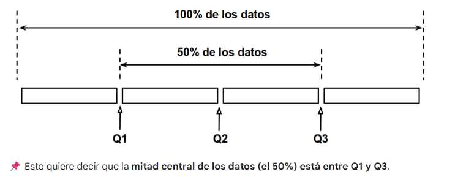

Función
Es un bloque de código que realiza una tarea específica. Tiene un nombre que la identifica, puede recibir datos de entrada entre paréntesis y, en muchos casos, devolver un resultado.
En Python existen muchas funciones integradas que podemos usar directamente, como:
| Función | Explicación (4 palabras) | Ejemplo |
|---|---|---|
print() |
Muestra datos en pantalla | print("Hola mundo") |
len() |
Cuenta elementos de objeto | len([1,2,3]) → 3 |
type() |
Devuelve tipo de dato | type(10) → int |
range() |
Genera secuencia de números | range(0,5) |
sum() |
Suma elementos de iterable | sum([1,2,3]) → 6 |
max() |
Devuelve valor máximo iterable | max([1,5,2]) → 5 |
min() |
Devuelve valor mínimo iterable | min([1,5,2]) → 1 |
input() |
Lee datos desde usuario | input("Nombre: ") |
int() |
Convierte a número entero | int("5") → 5 |
str() |
Convierte a texto string | str(10) → "10" |
list() |
Convierte iterable en lista | list("abc") → ['a','b','c'] |
sorted() |
Ordena elementos de iterable | sorted([3,1,2]) → [1,2,3] |
Identificadores
Un identificador es el nombre que se le da a una variable y debe ser único dentro del programa.
- Solo puede usar letras, números y guion bajo (
_). - No puede empezar con un número.
- No permite símbolos especiales (como
-,@,#). - Es sensible a mayúsculas (
edad≠Edad). - No puede ser una palabra reservada (
if,for,print, etc.).
# Ejemplo de sensibilidad a mayúsculas
edad = 25
Edad = 30 # Distinta variableTipos de datos
Los tipos de datos más comunes son:
- Números enteros (
int): como25,0,-5. - Números decimales o flotantes (
float): como1.71,-2.5,0.001. - Cadenas de texto o strings (
str): como"Ana","Santa Fe","CP 3000". - Booleanos (
bool): sólo pueden tomar dos valores,True(verdadero) oFalse(falso).
Los enteros representan números sin decimales, mientras que los flotantes representan números con decimales; ambos se usan para realizar operaciones matemáticas.
Las cadenas de texto pueden contener letras, números y otros caracteres. Se escriben entre comillas simples o dobles, siempre usando el mismo tipo de comilla para abrir y cerrar la cadena. Por ejemplo, "Ana" y 'Ana' son formas equivalentes de definir la misma cadena.
Aunque una cadena puede contener números, como "2025", el sistema siempre las interpreta como texto, por lo que no se pueden usar directamente en operaciones matemáticas.
Los booleanos son útiles para representar condiciones de verdadero o falso y para guardar datos que son de tipo Sí/No. Por ejemplo, es_mayor = True indica que una persona es mayor de edad, mientras que usuario_registrado = False señala que un usuario no está registrado en un sistema.
Operadores
Cuando escribimos edad_actual = 20 estamos usando el operador de asignación = para asignar el número 20 a la variable edad_actual. Cuando se hace una asignación, el valor queda guardado en una posición de la memoria.
Los operadores también permiten usar lo que guardamos en las variables para obtener otros resultados. En el ejemplo anterior, usamos el operador aritmético + para sumarle 5 al valor guardado en la variable edad_actual, y el resultado de esa operación también lo guardamos en una variable edad_futura, haciendo otra asignación con el operador =.
| Operador | Tipo | Descripción | Ejemplo | Resultado |
|---|---|---|---|---|
+ |
Aritmético | Suma | 7 + 2 |
9 |
- |
Aritmético | Resta | 7 - 2 |
5 |
* |
Aritmético | Multiplicación | 7 * 2 |
14 |
/ |
Aritmético | División real | 7 / 2 |
3.5 |
// |
Aritmético | División entera | 7 // 2 |
3 |
% |
Aritmético | Resto de división | 7 % 2 |
1 |
** |
Aritmético | Potencia | 7 ** 2 |
49 |
= |
Asignación | Asigna valor a variable | x = 5 |
x vale 5 |
+= |
Asignación | Suma y asigna | x += 2 |
x = x + 2 |
-= |
Asignación | Resta y asigna | x -= 2 |
x = x - 2 |
== |
Comparación | Igualdad | 5 == 5 |
True |
!= |
Comparación | Distinto de | 5 != 3 |
True |
> |
Comparación | Mayor que | 5 > 3 |
True |
< |
Comparación | Menor que | 5 < 3 |
False |
>= |
Comparación | Mayor o igual | 5 >= 5 |
True |
<= |
Comparación | Menor o igual | 5 <= 3 |
False |
and |
Lógico | Ambas condiciones verdaderas | True and False |
False |
or |
Lógico | Al menos una verdadera | True or False |
True |
not |
Lógico | Invierte valor lógico | not True |
False |
Como vemos en la tabla, tenemos tres tipos de división: /, // y %.
Si recordás, en una división intervienen cuatro componentes principales:
- Dividendo: el número a dividir.
- Divisor: el número por el cual se divide.
- Cociente: el resultado de la división.
- Resto o residuo: lo que sobra después de dividir.
Para obtener el cociente podemos usar / o // dependiendo del caso, y para el resto %.
Para verlo, tomemos como ejemplo dividir 7 entre 2. Mirá este código y luego ejecutalo para obtener el resultado:
dividendo = 7
divisor = 2
cociente = dividendo / divisor # 3.5 (división normal)
cociente_entero = dividendo // divisor # 3 (división entera)
resto = dividendo % divisor # 1 (resto de la división)
print(cociente)
print(cociente_entero)
print(resto)Ramificación
Se refiere a la capacidad de un programa para tomar decisiones y ejecutar diferentes bloques de código según ciertas condiciones. De esta forma, el flujo de ejecución deja de ser lineal y se divide en diferentes caminos dependiendo de valores o condiciones específicas.
Estructuras de control condicionales
El cambio en el flujo de ejecución del programa se logra mediante estructuras de control. En el ejemplo usamos if y if-else, que son estructuras de control condicionales. Estas estructuras nos permiten introducir la ramificación en el programa, lo que hace que el flujo de ejecución se divida y siga diferentes caminos dependiendo de si se cumple o no una condición.
Una condición es una expresión lógica (como las comparaciones que vimos antes) que se evalúa y devuelve un resultado booleano. Decimos que la condición "se cumple" cuando el resultado de la evaluación es True (verdadero) y que "no se cumple" cuando el resultado es False (falso).
🧠 Idea clave (bien explicada)
Cuando comparás strings en Python, no compara palabras como humanos, sino que:
- Compara letra por letra.
- De izquierda a derecha.
- Usando el valor numérico de cada carácter (ASCII/Unicode).
📌 Regla práctica:
- La primera letra distinta define todo.
- Mayúsculas ≠ minúsculas.
- Si una palabra es parte de otra → la más corta es menor.
| Expresión | ¿Qué compara? | Resultado | Por qué |
|---|---|---|---|
"Ana" == "Ana" |
Igualdad exacta | True |
Son idénticas |
"Ana" == "ana" |
A vs a | False |
Mayúscula ≠ minúscula |
"Ana" < "Beto" |
A vs B | True |
A viene antes que B |
"ana" > "Ana" |
a vs A | True |
minúsculas tienen mayor valor ASCII |
"abc" < "abd" |
c vs d | True |
c es menor que d |
"abc" < "abcd" |
misma base | True |
la más corta es menor |
"perro" > "gato" |
p vs g | True |
p está después de g |
"123" < "9" |
1 vs 9 | True |
compara como texto, no como número |
👉 "10" < "2" → True
❌ No compara números
✔ Compara "1" con "2"Un operador muy útil para trabajar con cadenas es el operador in, conocido como operador de pertenencia.
Este operador verifica si una subcadena está contenida dentro de otra cadena. Si la subcadena se encuentra en la cadena, el operador devuelve True; si no, devuelve False.
Operadores lógicos
Podemos combinar varias expresiones lógicas en una sola usando los operadores and, or y not. Estos operadores se llaman operadores lógicos y permiten evaluar condiciones y tomar decisiones en función de su resultado.
Los operadores lógicos funcionan de la siguiente manera:
and: evalúa si ambas condiciones son verdaderas al mismo tiempo.or: evalúa si al menos una de las condiciones es verdadera.not: niega una condición, es decir, cambia una condición verdadera a falsa y viceversa.
Resumen de Clasificación
| Tipo de Operador | Operadores |
|---|---|
| Aritméticos | **, *, /, //, %, +, - |
| Relacionales | <, <=, >, >=, ==, != |
| Lógicos | not, and, or |
Tema 3
Estadística: Es la herramienta que nos permite recopilar, organizar y analizar datos para entender mejor la realidad y tomar decisiones basadas en información.
Unidades experimentales: Las unidades experimentales son individuos, objetos, eventos, animales, países, ciudades, etc. que son objeto de estudio en un análisis estadístico.
Tipos de Datos — Cuadro Sinóptico
| Tipo de dato | Subtipo | Definición | Características clave | Ejemplos |
|---|---|---|---|---|
| Cuantitativo (numérico) | Discreto | Cuenta cantidades enteras | ✔ Valores enteros ✔ No admite decimales ✔ Resultado de conteo |
Materias cursadas (3, 4, 5) |
| Continuo | Mide magnitudes en un rango | ✔ Admite decimales ✔ Resultado de medición ✔ Puede tomar infinitos valores |
Edad (19, 19.5) Rendimiento (8.2, 9.7) |
|
| Cualitativo (categórico) | Nominal | Clasifica sin orden | ✔ Categorías sin jerarquía ✔ Solo etiquetas ✔ No comparables |
Usa redes (Sí/No) Transporte (Auto, Bici) |
| Ordinal | Clasifica con orden | ✔ Tiene jerarquía ✔ Relación de orden ✔ No hay distancia numérica |
Satisfacción (Baja, Media, Alta) |
Clave Rápida (Comparación)
| Pregunta clave | Tipo resultante |
|---|---|
| ¿Se puede hacer promedio? | Cuantitativo |
| ¿Es un conteo entero? | Discreto |
| ¿Es una medición con decimales? | Continuo |
| ¿Son categorías sin orden? | Nominal |
| ¿Hay jerarquía (mejor/peor)? | Ordinal |
Medidas para Datos Cualitativos
| Medida | Nombre técnico | Qué indica | Cómo se calcula | Rango | Suma total | Uso principal |
|---|---|---|---|---|---|---|
| Cantidad | Frecuencia absoluta | Cuántos casos hay en cada categoría | Conteo directo | 0 a n | n (total de datos) | Saber cantidad exacta |
| Proporción | Frecuencia relativa | Qué parte del total representa cada categoría | frecuencia / total |
0 a 1 | 1 | Comparar categorías |
| Porcentaje | Frecuencia relativa (%) | Proporción en escala porcentual | proporción × 100 |
0 a 100 | 100 | Interpretación más clara |
| Concepto | Responde | Ventaja | Ejemplo |
|---|---|---|---|
| Frecuencia absoluta | ¿Cuántos hay? | Valor exacto | 25 personas |
| Frecuencia relativa | ¿Qué proporción? | Permite comparar | 0.25 |
| Porcentaje | ¿Qué porcentaje? | Más intuitivo | 25% |
Tema 4
Listas en Python — Cuadro General
| Concepto | Definición | Ejemplo | Resultado / Interpretación |
|---|---|---|---|
| Lista | Estructura que guarda varios valores en un solo lugar | ventas = [320, 280, 310, 290] |
Una sola variable contiene varios datos |
| Elemento | Cada valor dentro de una lista | 320, 280, 310 |
Cada número representa un dato |
| Índice | Posición que ocupa cada elemento | ventas[1] |
Accede al segundo elemento de la lista |
| Índice positivo | Cuenta desde el inicio | ventas[0] |
Primer elemento |
| Índice negativo | Cuenta desde el final | ventas[-1] |
Último elemento |
| Rebanado / slicing | Extrae una parte de la lista | ventas[0:3] |
Devuelve una sublista |
| Paso | Salta elementos o cambia el recorrido | ventas[::2] |
Toma elementos alternados |
Paso 1: Indexación en Listas
| Tipo de índice | Cómo cuenta | Ejemplo | Resultado | Uso |
|---|---|---|---|---|
| Positivo | Desde el principio | ventas[0] |
Primer elemento | Cuando conozco la posición inicial |
| Desde el principio | ventas[1] |
Segundo elemento | Acceso directo | |
| Desde el principio | ventas[11] |
Último elemento si hay 12 datos | Última posición positiva | |
| Negativo | Desde el final | ventas[-1] |
Último elemento | Acceder al final rápido |
| Desde el final | ventas[-2] |
Penúltimo elemento | Datos recientes | |
| Desde el final | ventas[-3] |
Antepenúltimo elemento | Últimos valores |
Paso 2: Rebanado / Slicing en Listas
| Notación | Qué significa | Ejemplo | Resultado esperado |
|---|---|---|---|
lista[i:j] |
Desde i hasta antes de j |
ventas[0:3] |
Primeros 3 elementos |
lista[:j] |
Desde el inicio hasta antes de j |
ventas[:3] |
Primer trimestre |
lista[i:] |
Desde i hasta el final |
ventas[3:] |
Últimos 3 elementos |
lista[:] |
Desde el inicio hasta el final | ventas[:] |
Copia completa |
lista[i:j:k] |
Desde i hasta antes de j, saltando de k en k |
ventas[0:12:2] |
Elementos alternados |
lista[::-1] |
Recorre la lista al revés | ventas[::-1] |
Lista invertida |
Paso 3: Aplicación Práctica (Lista de Ventas)
| Código | Qué extrae | Resultado |
|---|---|---|
ventas[0] |
Enero | 320 |
ventas[1] |
Febrero | 280 |
ventas[2] |
Marzo | 310 |
ventas[-1] |
Diciembre | 330 |
ventas[-2] |
Noviembre | 300 |
ventas[-3] |
Octubre | 350 |
ventas[0:3] |
Enero a marzo | [320, 280, 310] |
ventas[3:6] |
Abril a junio | [290, 340, 360] |
ventas[6:9] |
Julio a septiembre | [410, 390, 370] |
ventas[9:12] |
Octubre a diciembre | [350, 300, 330] |
Paso 4: Concatenación y Mutabilidad
| Concepto | Qué significa | Código de ejemplo | Resultado | Idea clave |
|---|---|---|---|---|
| Concatenación | Unir listas en una sola | [1, 2, 3] + [4, 5] |
[1, 2, 3, 4, 5] |
+ une listas, no suma números |
| Orden en concatenación | Respeta el orden original | [4, 5] + [1, 2, 3] |
[4, 5, 1, 2, 3] |
El orden cambia el resultado |
| Repetición | Repite una lista varias veces | [1, 2, 3] * 2 |
[1, 2, 3, 1, 2, 3] |
* duplica la secuencia |
| Mutabilidad | La lista puede cambiarse | lista = [1, 2, 3]lista[1] = 20 |
[1, 20, 3] |
Se modifica la lista existente |
| Reemplazo por índice | Cambiar un elemento puntual | lista = [1, 2, 3]lista[0] = 99 |
[99, 2, 3] |
El índice indica qué valor se cambia |
Iteración y Ciclos (while)
Paso 1: Conceptos Generales
| Concepto | Definición | Para qué sirve | Ejemplo / Idea clave |
|---|---|---|---|
| Iteración | Repetición de instrucciones varias veces | Automatizar tareas repetitivas | Recorrer una lista elemento por elemento |
| Ciclo / Bucle | Estructura que permite repetir instrucciones | Ejecutar un bloque varias veces | while, for |
| Iteración individual | Cada ejecución del bloque dentro del ciclo | Procesar un dato por vez | Una vuelta del while |
| Condición del ciclo | Expresión lógica que controla la repetición | Decide si el ciclo continúa o termina | i < len(ventas) |
| Contador / índice | Variable que cambia en cada vuelta | Indica qué elemento usar | i = i + 1 |
| Acumulador | Variable que guarda un total progresivo | Sumar valores paso a paso | suma_ventas = suma_ventas + ventas[i] |
Paso 2: Estructura y Función del Ciclo while
| Parte del código | Rol | Qué hace |
|---|---|---|
i = 0 |
Inicialización del índice | Empieza en el primer elemento de la lista |
suma_ventas = 0 |
Inicialización del acumulador | Prepara una variable para guardar la suma total |
while i < len(ventas): |
Condición del ciclo | Repite mientras queden elementos por recorrer |
ventas[i] |
Acceso al elemento actual | Toma el valor ubicado en la posición i |
suma_ventas = suma_ventas + ventas[i] |
Acumulación | Agrega el valor actual al total |
i = i + 1 |
Avance del índice | Pasa al siguiente elemento |
media_ventas = suma_ventas / len(ventas) |
Cálculo final | Calcula el promedio después del ciclo |
Paso 3: Variables Importantes en un while
| Variable | Tipo de rol | Valor inicial | Cómo cambia | Para qué sirve |
|---|---|---|---|---|
i |
Índice / contador | 0 |
Aumenta de a 1 | Recorrer posiciones de la lista |
suma_ventas |
Acumulador | 0 |
Suma cada venta | Guardar el total acumulado |
ventas[i] |
Valor actual | Depende de i |
Cambia en cada iteración | Representa el dato que se está procesando |
len(ventas) |
Longitud | Cantidad total de elementos | No cambia | Define cuándo termina el ciclo |
Paso 4: Comparación (Contador vs Acumulador)
| Aspecto | Contador | Acumulador |
|---|---|---|
| Qué guarda | Cantidad de casos | Suma total de valores |
| Cuánto suma | Siempre suma 1 |
Suma un valor variable |
| Cuándo cambia | Cuando se cumple una condición | En cada iteración o cuando corresponde |
| Ejemplo conceptual | Meses con ventas superiores a la media | Total de ventas del año |
| Código largo | conteo_meses = conteo_meses + 1 |
suma_ventas = suma_ventas + ventas[i] |
| Código abreviado | conteo_meses += 1 |
suma_ventas += ventas[i] |
Paso 5: Ejemplo Práctico (Sumar Ventas con while)
| Código | Qué significa |
|---|---|
ventas = [320, 280, 310, 290] |
Lista con datos de ventas |
i = 0 |
Se empieza desde el primer índice |
suma_ventas = 0 |
La suma inicia vacía |
while i < len(ventas): |
Repetir mientras i sea menor que la cantidad de datos |
suma_ventas = suma_ventas + ventas[i] |
Sumar la venta actual |
i = i + 1 |
Avanzar al siguiente mes |
media_ventas = suma_ventas / len(ventas) |
Dividir la suma por la cantidad de ventas |
Tema 5
Algoritmos y Búsqueda
Algoritmo: Serie de pasos claros y ordenados para resolver un problema.
En programación, usamos algoritmos todo el tiempo: para buscar datos, ordenarlos, filtrarlos, y más.
En el ejemplo anterior aplicamos un algoritmo de búsqueda para encontrar el valor más chico de una lista de números.
Un buen algoritmo tiene las siguientes características:
- Tiene instrucciones claras, sin ambigüedades.
- Se sigue en un orden lógico paso a paso.
- Siempre termina en algún momento (no se queda dando vueltas infinitamente).
Búsqueda Lineal — Concepto, Uso y Costo
| Aspecto | Descripción |
|---|---|
| Nombre del algoritmo | Búsqueda lineal (linear search) |
| Objetivo | Encontrar un valor dentro de una lista |
| Valor buscado | Se llama clave o key |
| Cómo trabaja | Recorre la lista desde el inicio hasta el final, comparando elemento por elemento |
| Tipo de recorrido | Secuencial, paso a paso, sin saltos |
| Sirve con listas ordenadas | Sí |
| Sirve con listas desordenadas | Sí |
| Ventaja | Es simple y funciona aunque la lista no esté ordenada |
| Desventaja | Puede ser lento si la lista es muy grande |
| Complejidad aproximada | $O(n)$, porque en el peor caso puede revisar todos los elementos |
| Ejemplo típico | Buscar todas las posiciones donde aparece una edad, precio o nombre |
Patrones de Búsqueda Lineal
| Patrón | Qué busca | Variable clave | Resultado esperado | Ejemplo |
|---|---|---|---|---|
| Buscar una aparición | Saber si un valor aparece al menos una vez | encontrado = False |
True o False |
¿Aparece el precio 18? |
| Guardar una posición | Encontrar dónde aparece por primera vez | posicion = -1 |
Índice encontrado o -1 |
Primera posición de 23 |
| Guardar varias posiciones | Encontrar todas las apariciones | posiciones = [] |
Lista de índices | 23 aparece en [1, 5] |
| Buscar mínimo | Encontrar el valor más chico | minimo o indice_menor |
Valor o posición del mínimo | Precio más bajo |
| Buscar máximo | Encontrar el valor más grande | maximo o indice_mayor |
Valor o posición del máximo | Venta más alta |
Ordenamiento por Selección — Cuadro Comparativo
| Aspecto | Descripción |
|---|---|
| Nombre del algoritmo | Ordenamiento por selección (selection sort) |
| Objetivo | Ordenar una lista siguiendo un criterio, por ejemplo de menor a mayor |
| Idea principal | Buscar el menor elemento y ubicarlo en la posición correcta |
| Cómo trabaja | En cada vuelta selecciona el mínimo de la parte no ordenada |
| Operación clave | Intercambiar valores usando una variable auxiliar (aux) |
| Ciclo externo | Avanza posición por posición (i) |
| Ciclo interno | Busca el menor desde la posición siguiente hasta el final (j) |
| Cantidad de comparaciones | $(n-1) + (n-2) + \dots + 1 = \frac{n(n-1)}{2}$ |
| Complejidad | $O(n^2)$ |
| Ventaja | Fácil de entender y programar |
| Desventaja | Ineficiente para listas grandes |
| Uso conceptual | Entender cómo funciona el ordenamiento paso a paso |
Mediana, Ordenamiento y Búsqueda Binaria — Resumen Ordenado
| Tema | Idea principal | Procedimiento / Regla | Condición importante | Complejidad / Clave |
|---|---|---|---|---|
| Mediana | Es el valor central o típico de un conjunto de datos ordenados | 1) Ordenar la lista 2) Calcular la posición central 3) Obtener uno o dos valores centrales |
Los datos deben estar ordenados | Sirve para representar el centro sin depender tanto de valores extremos |
| Mediana con cantidad impar | Hay un único valor central | Posición: n // 2 |
n % 2 == 1 |
Como los índices empiezan en 0, el centro queda en n // 2 |
| Mediana con cantidad par | Hay dos valores centrales | Posiciones: n // 2 - 1 y n // 2Mediana: (valor_inferior + valor_superior) / 2 |
n % 2 == 0 |
Se promedian los dos valores del medio |
| Ordenamiento por selección | Ordena la lista buscando el menor valor restante y ubicándolo en su posición correcta | Para cada posición i, busca el menor desde i hasta el final y lo intercambia |
Funciona aunque la lista esté desordenada | Complejidad cuadrática: $O(n^2)$ |
| Intercambio de valores | Permite mover el menor valor encontrado a su lugar correcto | Usar variable auxiliar:aux = precios[i]precios[i] = precios[indice_menor]precios[indice_menor] = aux |
Necesario para no perder valores | Se modifica la lista original |
Ciclo for, range() y Recorrido de Listas
| Concepto | Qué es / para qué sirve | Estructura / código | Clave para no confundirse |
|---|---|---|---|
Ciclo for |
Repite instrucciones para cada elemento de una secuencia | for ingreso in ingresos_mensuales: print(ingreso) |
Recorre directamente los valores de la lista |
| Variable del ciclo | Toma un valor distinto en cada iteración | for ingreso in ingresos_mensuales: |
ingreso vale primero 570, luego 1200, luego 590, etc. |
| Recorrido por valores | Usa directamente cada elemento de la lista | for ingreso in ingresos_mensuales: |
Útil si no necesitás saber la posición |
| Recorrido por índices | Recorre posiciones de la lista | for i in range(len(ingresos_mensuales)): print(ingresos_mensuales[i]) |
Útil si necesitás la posición i |
range(b) |
Genera enteros desde 0 hasta b-1 |
range(7) |
Produce 0, 1, 2, 3, 4, 5, 6 |
range(a, b) |
Genera enteros desde a hasta b-1 |
range(3, 7) |
Produce 3, 4, 5, 6 |
range(a, b, paso) |
Genera enteros saltando según el paso | range(3, 7, 2) |
Produce 3, 5 |
len(lista) |
Devuelve la cantidad de elementos | len(ingresos_mensuales) |
Si hay 12 datos, devuelve 12 |
range(len(lista)) |
Genera todos los índices válidos | range(len(lista)) |
Si hay 12 datos, genera 0 a 11 |

Cuartiles: Paso 1 - Medidas de Posición
| Concepto | Qué representa | Cómo se calcula | Interpretación |
|---|---|---|---|
| Q1 | Primer cuartil | Mediana de la mitad inferior | 25% de los datos queda por debajo |
| Q2 | Segundo cuartil / mediana | Mediana de todos los datos | 50% queda por debajo y 50% por encima |
| Q3 | Tercer cuartil | Mediana de la mitad superior | 75% de los datos queda por debajo |
Cuartiles: Paso 2 - Dispersión y Cálculo
| Concepto | Qué representa | Cómo se calcula | Interpretación |
|---|---|---|---|
| Rango intercuartílico | Dispersión central | Q3 - Q1 |
Mide la amplitud del 50% central |
| Algoritmo general | Procedimiento para calcular cuartiles | 1) Copiar datos 2) Ordenar 3) Calcular Q2 4) Separar mitades 5) Calcular Q1 y Q3 |
Permite analizar concentración, dispersión y posibles outliers |
| Ejemplo dado | Q1 = 575, Q2 = 605, Q3 = 640 |
Q3 - Q1 = 65 |
El 50% central está entre 575 y 640 |
Cuartiles: Paso 3 - Simetría y Asimetría
| Concepto | Qué representa | Cómo se calcula | Interpretación |
|---|---|---|---|
| Asimetría derecha | Cola hacia valores altos | Q3 - Q2 > Q2 - Q1 |
Hay valores altos más alejados del centro |
| Asimetría izquierda | Cola hacia valores bajos | Q2 - Q1 > Q3 - Q2 |
Hay valores bajos más alejados del centro |
| Simetría | Distribución equilibrada | Q2 - Q1 ≈ Q3 - Q2 |
Los datos se reparten de forma pareja alrededor del centro |
Métodos de Listas en Python — Cuadro Comparativo
| Método / operación | Qué hace | ¿Modifica la lista original? | ¿Devuelve lista nueva? | Ejemplo | Resultado / efecto |
|---|---|---|---|---|---|
lista.index(x) |
Busca la primera aparición de x |
❌ No | ❌ No | [10, 20, 10].index(10) |
Devuelve 0 |
lista.append(x) |
Agrega x al final |
✔ Sí | ❌ No | lista.append(5) |
Agrega 5 al final |
lista.sort() |
Ordena de menor a mayor | ✔ Sí | ❌ No | lista.sort() |
La lista queda ordenada |
lista.reverse() |
Invierte el orden | ✔ Sí | ❌ No | lista.reverse() |
Cambia el orden original |
lista.extend(otra_lista) |
Agrega varios elementos al final | ✔ Sí | ❌ No | lista.extend([4,5]) |
Une elementos a la lista |
lista.insert(i, x) |
Inserta x en posición i |
✔ Sí | ❌ No | lista.insert(1, 99) |
Inserta 99 en índice 1 |
lista.remove(x) |
Elimina la primera aparición de x |
✔ Sí | ❌ No | lista.remove(20) |
Borra el primer 20 |
lista.copy() |
Copia la lista | ❌ No | ✔ Sí | copia = lista.copy() |
Crea otra lista independiente |
lista + [x] |
Concatena listas | ❌ No | ✔ Sí | nueva = lista + [5] |
Crea una lista nueva |
lista[1:] |
Rebanado / slicing | ❌ No | ✔ Sí | nueva = lista[1:] |
Crea sublista nueva |
lista.clear() |
Elimina todos los elementos de una lista | ✔ Sí | ❌ No | Queda vacía la lista |
Problemas y Resumen: Media, Mediana, Rango, Cuartiles e IQR
La idea general es analizar una lista de datos numéricos para saber:
- Cuál es un valor representativo
- Qué tan dispersos están los datos
- Si existen valores raros o extremos
Ejemplo base:
tiempos_estudio = [2, 4, 3, 5, 1, 6, 2, 8, 3, 4, 20]| Concepto | Qué mide | Fórmula o idea | Ejemplo de interpretación |
|---|---|---|---|
| Media | Promedio general | $$\bar{x}=\frac{x_1+x_2+\cdots+x_n}{n}$$ | Si la media es 5.27 horas, ese es el promedio de estudio |
| Mediana | Valor central | Ordenar los datos y buscar el centro | Si la mediana es 4, la mitad estudió 4 horas o menos |
| Mínimo | Valor más bajo | Primer dato ordenado | El menor tiempo registrado |
| Máximo | Valor más alto | Último dato ordenado | El mayor tiempo registrado |
| Rango | Amplitud total | $$Rango = Máximo - Mínimo$$ | Indica cuánto se separan los extremos |
| Q1 | Primer cuartil | Mediana de la mitad inferior | El 25% de los datos queda por debajo |
| Q2 | Segundo cuartil | Es la mediana | El 50% queda por debajo |
| Q3 | Tercer cuartil | Mediana de la mitad superior | El 75% queda por debajo |
| IQR | Rango intercuartílico | $$IQR = Q3 - Q1$$ | Mide la dispersión del 50% central |
| Outlier | Valor atípico | Está fuera de los límites del IQR | Puede ser un dato raro o extremo |
Cálculo Básico en Python
# Ordenamos Datos
tiempos_estudio = [2, 4, 3, 5, 1, 6, 2, 8, 3, 4, 20]
datos = tiempos_estudio.copy()
datos.sort()
print("Datos ordenados:", datos)
# Calculamos media
suma = sum(datos)
cantidad = len(datos)
media = suma / cantidad
print("Media:", media)Cálculo de la Mediana según cantidad de datos
| Caso | Condición | Fórmula en Python | Qué se hace |
|---|---|---|---|
| Cantidad impar | n % 2 == 1 |
datos[n // 2] |
Se toma el dato del medio |
| Cantidad par | n % 2 == 0 |
(datos[n // 2 - 1] + datos[n // 2]) / 2 |
Se promedian los dos datos centrales |
Código Completo: Análisis Estadístico con Outliers
tiempos_estudio = [2, 4, 3, 5, 1, 6, 2, 8, 3, 4, 20]
datos = tiempos_estudio.copy()
datos.sort()
print("Datos ordenados:", datos)
media = sum(datos) / len(datos)
minimo = datos[0]
maximo = datos[-1]
rango = maximo - minimo
n = len(datos)
# Cálculo de Q2 (Mediana)
if n % 2 == 0:
Q2 = (datos[n // 2 - 1] + datos[n // 2]) / 2
else:
Q2 = datos[n // 2]
# Separación de mitades
if n % 2 == 0:
mitad_inferior = datos[:n // 2]
mitad_superior = datos[n // 2:]
else:
mitad_inferior = datos[:n // 2]
mitad_superior = datos[n // 2 + 1:]
# Cálculo de Q1
n1 = len(mitad_inferior)
if n1 % 2 == 0:
Q1 = (mitad_inferior[n1 // 2 - 1] + mitad_inferior[n1 // 2]) / 2
else:
Q1 = mitad_inferior[n1 // 2]
# Cálculo de Q3
n2 = len(mitad_superior)
if n2 % 2 == 0:
Q3 = (mitad_superior[n2 // 2 - 1] + mitad_superior[n2 // 2]) / 2
else:
Q3 = mitad_superior[n2 // 2]
# Rango Intercuartílico y Outliers
IQR = Q3 - Q1
limite_inferior = Q1 - 1.5 * IQR
limite_superior = Q3 + 1.5 * IQR
outliers = []
for valor in datos:
if valor < limite_inferior or valor > limite_superior:
outliers.append(valor)
print("Media:", media)
print("Mínimo:", minimo)
print("Máximo:", maximo)
print("Rango:", rango)
print("Q1:", Q1)
print("Q2:", Q2)
print("Q3:", Q3)
print("IQR:", IQR)
print("Límite inferior:", limite_inferior)
print("Límite superior:", limite_superior)
print("Outliers:", outliers)